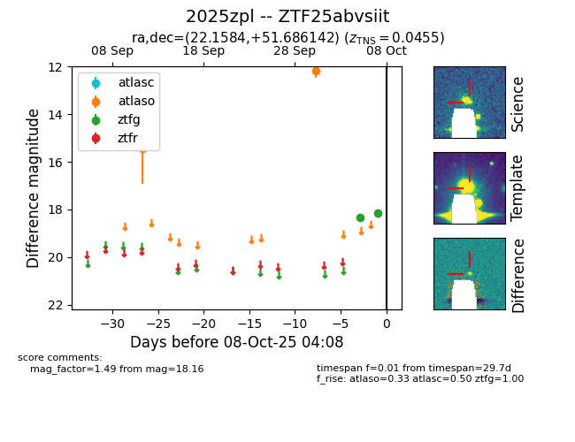

FINK: ZTF25abvsiit
Lasair: ZTF25abvsiit
ALeRCE: ZTF25abvsiit
TNS: 2025zpl
YSE: 2025zpl
ZTF25abvsiit (ztf,fink)
2025zpl (tns,yse)
equatorial (ra, dec) = (22.1584,+51.68614)
galactic (l, b) = (128.7846,-10.76242)

last atlasc=nan, atlaso=nan, ztfg=18.16
1 atlasc, 4 atlaso, 2 ztfg detections